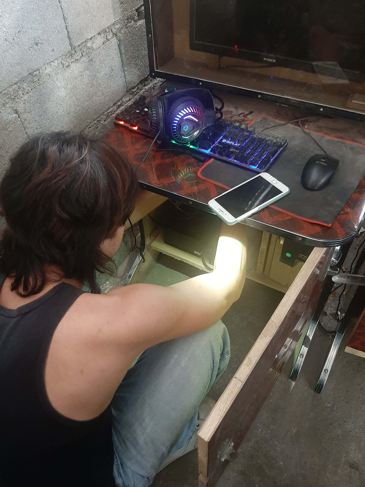
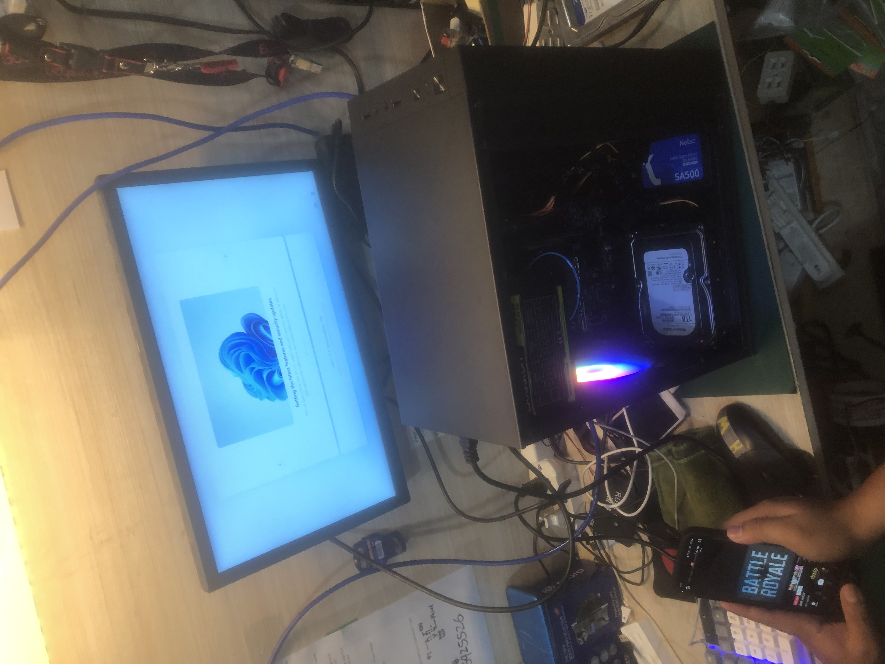
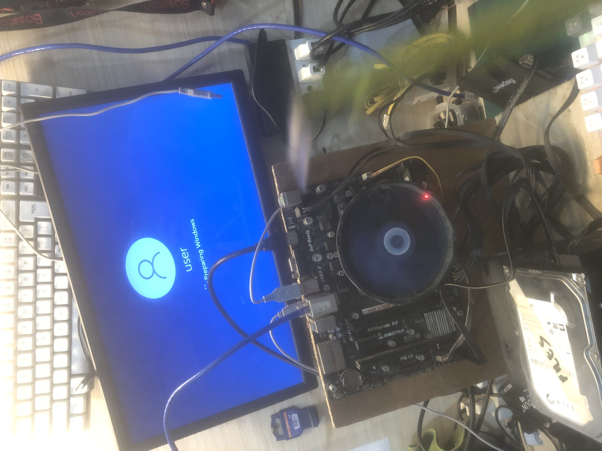
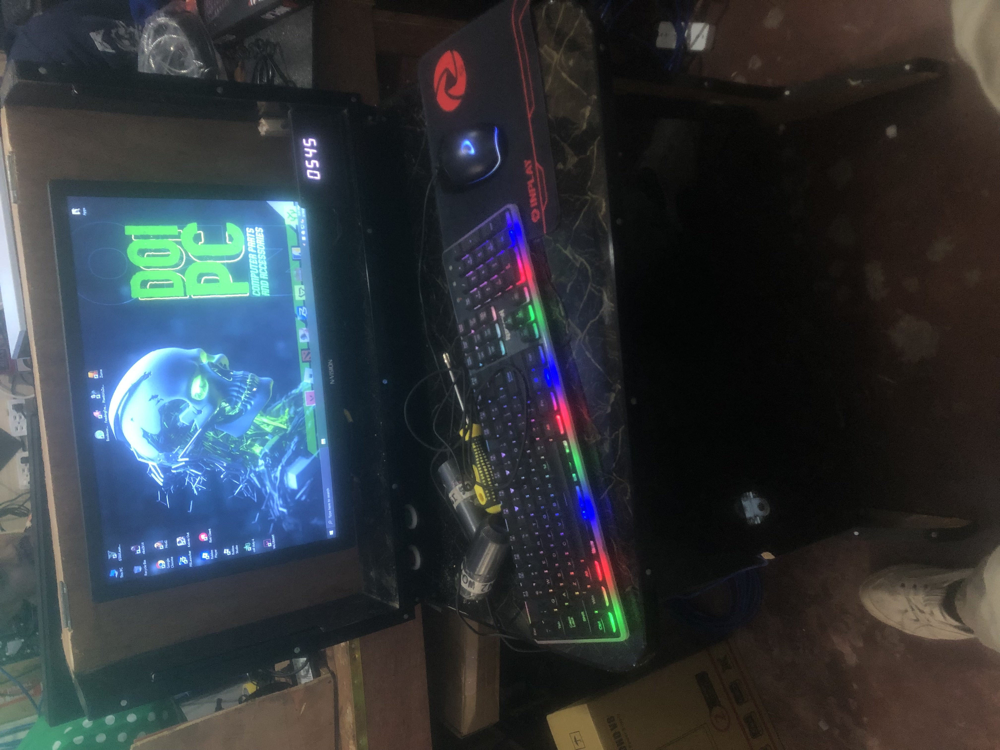
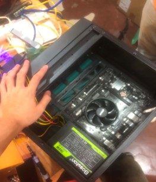
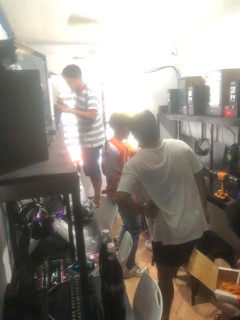

DOi PC Computer Parts & Accessories
Completed a comprehensive internship at DOi PC, a leading computer parts and accessories retailer.
Gained hands-on experience in: Technical support, hardware troubleshooting, and customer service.
KEY RESPONSIBILITIES
- Diagnosed and repaired computer hardware issues for customers
- Assembled custom PC builds based on customer specifications
- Provided technical support and recommendations on computer parts
- Managed inventory and organized computer accessories
- Assisted customers with product selection and compatibility
ACHIEVEMENTS
- Successfully resolved 20+ customer technical issues
- Built 10+ custom PCs with zero return or warranty claims
- Received positive customer feedback for excellent service
SKILLS DEVELOPED
Hardware Troubleshooting
PC Assembly
Customer Service
Technical Support
Inventory Management
INTERNSHIP GALLERY
A visual journey through my internship experience at DOi PC Computer Parts & Accessories.

Working on computer assembly and hardware installation

Troubleshooting and diagnosing computer issues

Organizing and managing computer accessories inventory

Providing customer support and technical assistance

Team collaboration and daily operations

Completing a successful internship at DOi PC